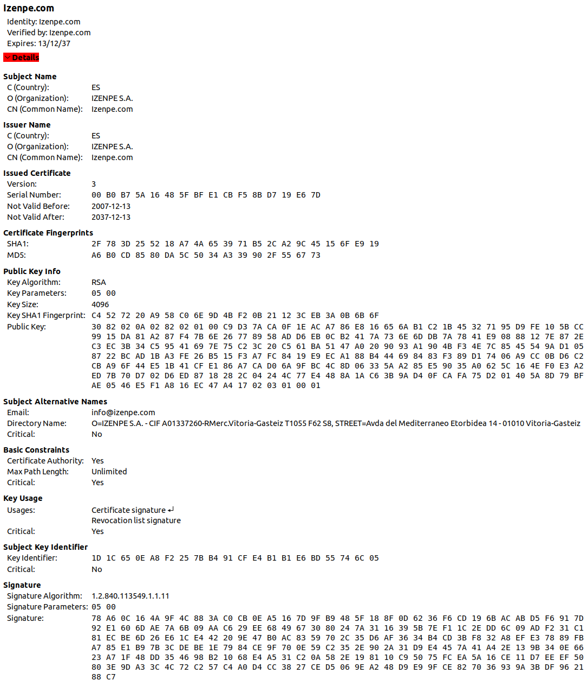

Certificados
Mikel Egaña Aranguren
Public Key Infraestructure (PKI)
- Infraestructura que permite enlazar entidades/personas con sus claves publicas
- Web of Trust: PKI sin autoridad central, cualquiera puede certificar
- Certificados: PKI con autoridad central, solo los CA pueden certificar
Autoridad de Certificación
- Una entidad certifica que el usuario es quien dice ser Depende de la confianza en la AC que lo certifica
- Almacena las claves pùblicas por nosotros
Certificados digitales
- La entidad emite un certificado digital
- En un certificado digital el CA firma mediante su clave privada la clave pública de un usuario/otra entidad
Agencia de Registro
- Independiente de AC
- Comprobar la idnetida del usuario antes de emitir el certificado
- Agencias tributarias, seguridad social, zuzenean, ...
Certificados digitales: X.509
- Estándar X.509 de International Telecommunication Union (ITU)
- Contiene una identidad (Persona, entidad, ...) y una clave publica
- Firmado por un CA - el poseedor de la clave publica puede
- Firmar con su clave privada
- Establecer comunicaciones seguras (SSL, HTTPS, ...)
- el CA debe mantener una base de datos de nombres distinguidos (ND) y de CAs subordinadas
Certificados digitales: X.509
- Cadena de confianza (Certification path validation algorithm)
- Certificate Revocation List (CRL)
Certificate Revocation List (CRL)
Una lista publica de certificados revocados
Reovocar: AC declara que ese certificado no es confiable
Definido en RFC 5280
Posibles razones para revocación: unspecified, keyCompromise, cACompromise, affiliationChanged, superseded, cessationOfOperation, certificateHold, removeFromCRL, privilegeWithdrawn, aACompromise
OCSP (Online Certificate Status Protocol)
- RFC 2560
- Permite validar el estado de un certificado digital de manera online
- Es más eficiente que la verificación mediante CRLs: CRLs en desuso
- Ventaja: su actualización constante
- Desventaja: necesidad de conexión para la comprobación
OCSP (Online Certificate Status Protocol)
- Cada AC que proporciona el servicio mantiene un servidor OCSP
- Este servicio responde a las aplicaciones cliente que remitan una petición estandarizada y sepan interpretar la respuesta
OCSP (Online Certificate Status Protocol)
- Cada AC que proporciona el servicio mantiene un servidor OCSP
- Este servicio responde a las aplicaciones cliente que remitan una petición estandarizada y sepan interpretar la respuesta
OCSP: Replay attack
- El atacante retiene un certificado valido hasta despues de su revocacion, y entonces lo envia al cliente
- Solucion: uso de nonce
Estructura de un certificado
Certificate
Version Number
Serial Number
Signature Algorithm ID
Issuer Name
Validity period
Subject name
Subject Public Key Info
Public Key Algorithm
Subject Public Key
...
Certificate Signature Algorithm
Certificate Signature;
Estructura de un certificado
Distinguished Name
C: country
SP: state or province
Locality: L
Organization: O
Organizational Unit: OU
Common Name: CN
Estructura de un certificado
IZENPE
Descarga de certificados izenpe
https://www.izenpe.com/certification-practice-statement/webize01-cndocjuridica/es/ Politica de certificacion: Certification practice statemtne
Estructura de un certificado

Certificado raíz
Subject Name == Issuer Name
Esta firmado por sí mismo: es el origen de la confianza (Nos fiamos de la entidad)
Jerarquía de certificación (RFC 1422)
Internet Policy Registration Authority (IPRA) >> Policy Certification Authorities (PCA) >> Certification Authorities (CA): Verisign, Thawte, GeoTrust, RapidSSL, DigiCertSSL
Tipos de certificados Certificados digitales
- Certificado de usuario (persona juridica) final
- Certificado de firma de software
- Certificado de servidor SSL
Implementacion
- los sistemas operativos y navegadores incluyen root certificates, asumiendo confianza de facto (el usuario confie en el software)
- Firefox OCSP query responder, Izenpe
Estructura de un certificado

Certificados digitales
Con un certificado digital conseguimos:
- Confidencialidad al poder encriptar la información
- Integridad al poder realizar hash de la información y poder firmarla
- Autenticidad al venir firmada la información
- No repudio al firmar la información


{kind=link}
{kind=link}